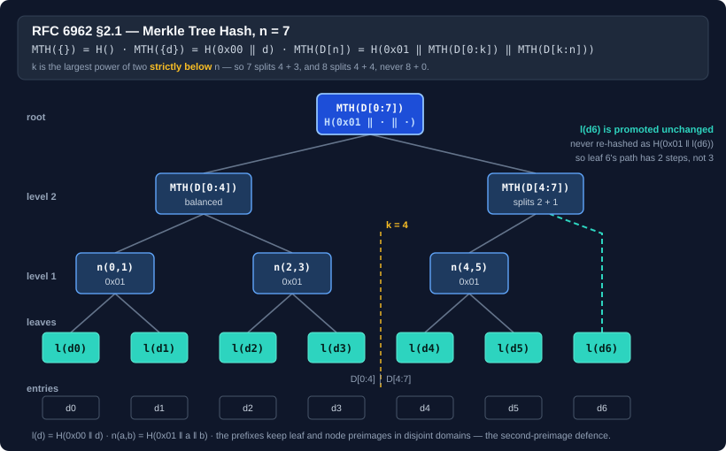

Merkle trees and proofs
MerkleTree implements the Merkle tree of RFC 6962: the Merkle Tree Hash over a list of entries or over fixed-size blocks of a byte stream, inclusion (audit) proofs, consistency proofs, and length-bound roots. It is the type to reach for when a root has to interoperate with a transparency log, an artifact attestation, or anything else built to the standard, and it is the only Bodu type that produces proofs.
The hash is yours to choose. The tree takes a Func<HashAlgorithm> factory, so the BCL digests and every Bodu digest work alike, and nothing assumes a 32-byte output. One type covers every workload: a default instance hashes leaves on the calling thread; an instance created with maxDegreeOfParallelism: -1 hashes them on every core and folds them in order into the same tree; and MerkleBlockAccumulator builds the tree from bytes as a writer produces them, so the root costs no second pass.
dotnet add package Bodu.Security.Cryptography

The construction, precisely
RFC 6962 §2.1 defines the Merkle Tree Hash over a list D[n]:
MTH({}) = H() the hash of zero bytes
MTH({d(0)}) = H(0x00 || d(0)) a leaf, not a bare digest
MTH(D[n]) = H(0x01 || MTH(D[0:k]) || MTH(D[k:n])) for n > 1
with k the largest power of two strictly below n. Two details are where plausible-looking implementations diverge, and both matter because a divergent root simply does not verify anywhere else:
- Three leaves split 2 + 1, not 1 + 2 and not a rounded half. For
n = 8,k = 4— the case where "strictly below" and "at or below" disagree, and where getting it wrong produces a tree one level too deep. - A subtree with one leaf contributes its leaf hash unchanged. It is not re-hashed as a one-child node.
Every root the tree computes is folded level by level with exactly that promotion rule, which visits the nodes of the recursive definition in the same order — so a root streamed from a file, a root over a list of entries, and a root accumulated from a writer's chunks are all the same root. The tree is binary by definition; the default fanOut of two is RFC 6962, and anything wider is an explicit mode of the package's own. An empty tree's root is H() rather than an exception: a log that has published nothing still has a head to sign.
A root and a proof over a list of entries
using System.Security.Cryptography;
using Bodu.Security.Cryptography;
var tree = new MerkleTree(SHA256.Create); // immutable; safe to share across threads
ReadOnlyMemory<byte>[] entries = [new byte[0], new byte[] { 0x00 }, new byte[] { 0x10 }];
byte[] root = tree.ComputeRoot(entries);
byte[][] path = tree.AuthenticationPath(entries, leafIndex: 2);
bool ok = tree.VerifyInclusion(
root, treeSize: entries.Length, leafIndex: 2,
entry: entries[2].Span,
path: path.Select(step => (ReadOnlyMemory<byte>)step).ToArray());
The instance keeps no digest state between calls and is deliberately not IDisposable — it creates and disposes a HashAlgorithm inside each call, so there is nothing on the tree itself to dispose and a using would imply a lifetime it does not have.
ComputeRootOfLeafHashes, AuthenticationPath(IReadOnlyList<byte[]>, long), and VerifyInclusionOfLeafHash are the counterparts for callers that already hold leaf hashes — from a cache, a previous pass, or a MerkleBlockComputation.
Block mode over a stream
For a byte stream, block mode cuts the input into fixed-size leaves and returns the root and the leaf hashes a path needs from the same pass, so a large object is never read twice:
MerkleBlockComputation computation = tree.ComputeBlocked(stream, blockSize: 1024 * 1024);
byte[] root = computation.Root;
long length = computation.InputLength;
byte[][] blockPath = tree.AuthenticationPath(computation.LeafHashes, blockIndex);

Two conventions differ from padding-based schemes, and both are deliberate:
- a zero-length input has no blocks at all, not one empty block, so its root is
H(); - a final short block is hashed at its actual length, never zero-padded — padding would let a shorter input collide with a zero-extended longer one.
The same computation is available over a ReadOnlyMemory<byte>, a ReadOnlySpan<byte> or a byte[] already in memory, and asynchronously over a stream with ComputeBlockedAsync, which awaits its reads. The static MerkleTree.BlockCount, MerkleTree.BlockOffset and MerkleTree.BlockLength members expose the same arithmetic in 64-bit form, so blocks of a multi-gigabyte object can be addressed without overflow, and the computation answers the same questions for its own input.
Root only, in logarithmic memory
ComputeRootOfBlocks folds the tree as it reads rather than retaining every leaf:
byte[] root = tree.ComputeRootOfBlocks(stream, blockSize: 1024 * 1024);
Each leaf is folded the moment it arrives: a level holds at most one pending node, and when a second lands the pair is hashed and the parent carried up. Every pending node is therefore a perfect subtree, one per set bit of the leaf count so far, and at the end a lone node is promoted unchanged — never re-hashed — which is what reproduces RFC 6962's shape without ever having held the whole tree. Peak memory is O(blockSize + log n · HashLength) whatever the input size. ComputeRootOfBlocksAsync is the awaiting twin, and in-memory overloads take a memory, a span or an array.
The trade is that no path can be produced afterwards without a second pass. ComputeBlocked retains every leaf hash for that reason, at leafCount × HashLength bytes — 16 KiB for a 512 MiB object at one-mebibyte blocks, which is usually the better deal if a proof is ever wanted.
Streaming from the writer
A writer that streams bytes to storage usually feeds them to an incremental digest as it goes. The accumulator gives the Merkle root the same shape: Append takes bytes in whatever sizes they arrive, re-blocks them into leaves internally, and folds each completed leaf at once, so the tree costs no second pass over the input and the root is identical whatever the chunking.
using MerkleBlockAccumulator merkle = tree.CreateBlockAccumulator(blockSize: 1 << 20);
using IncrementalHash digest = IncrementalHash.CreateHash(HashAlgorithmName.SHA256);
while (TryReadChunk(out ReadOnlySpan<byte> chunk)) // any sizes, any number of calls
{
digest.AppendData(chunk); // the flat digest the index already carries
merkle.Append(chunk); // the Merkle root, from the same bytes, in the same pass
}
byte[] flatDigest = digest.GetHashAndReset();
byte[] boundRoot = merkle.FinishBound(); // H(0x02 || u64_be(length) || MTH) — the shape to publish
Finish() returns the plain root, FinishBound() the length-bound one, and — when the accumulator was created with retainLeafHashes: true — FinishComputation() returns the same MerkleBlockComputation that ComputeBlocked would have, so authentication paths can be built later. Memory is one block plus a logarithmic number of hashes unless leaf hashes are retained. Stop appending before any trailer the commitment must not cover; Reset() starts the next input on the same algorithm and buffer.
Hashing leaves in parallel
Leaf hashing is where a block-mode computation spends essentially all of its time — one hash over blockSize bytes per leaf, against a handful of digest-sized node hashes — so it is the only part worth spreading across cores. An instance created with a maxDegreeOfParallelism other than one hashes leaves in batches, one algorithm per worker obtained from the factory, and folds them in order on the calling thread. The tree shape is untouched, so the root is bit-identical to a sequential instance's for every input and every proof verifies across the two; switching is a performance question and never a compatibility one.
var parallel = new MerkleTree(SHA256.Create, maxDegreeOfParallelism: -1); // -1: the processor count
// Bytes already in memory — this is the one that scales.
MerkleBlockComputation computation = parallel.ComputeBlocked(buffer.AsMemory(), blockSize: 1024 * 1024);
// From a stream, when the object is too large to hold.
byte[] root = await parallel.ComputeRootOfBlocksAsync(stream, blockSize: 1024 * 1024);
// Entry mode: worthwhile when the entries are individually large.
byte[] entryRoot = parallel.ComputeRoot(entries);
Prefer the ReadOnlyMemory<byte> overload where you can. A stream must be read sequentially, so the stream paths copy each block on the calling thread before any worker can touch it, which caps the gain; the in-memory overload slices and hashes each block inside its own worker. (A span cannot be captured by workers, so on a parallel instance the span overloads copy into a pooled buffer first.)
How much you gain depends on the source and on how many cores you have. Measured on a 4-core Intel Xeon 2.80GHz under .NET 10, over 64 MiB at one-mebibyte blocks:
| Leaf hash | Stream overload | In-memory overload |
|---|---|---|
| SHA-256 | 2.6× | 3.4× |
| SHA-512 | 2.3× | 3.2× |
| Tiger | 2.6× | 3.3× |
| BLAKE2b | 2.2× | 3.1× |
Two things hold across all four. The in-memory overload lands close to the core count, because every block is sliced and hashed inside its own worker. The stream overload lands consistently lower, because the read is serial — the copy happens on the calling thread no matter how many workers are waiting — and that ceiling is what the gap between the two columns measures.
Note
These come from the benchmark in Bodu.Security.Cryptography/bench, so they can be re-measured rather than taken on trust:
dotnet run --project Bodu.Security.Cryptography/bench/Bodu.Security.Cryptography.Benchmarks.csproj -c Release -- --filter '*MerkleParallel*'
Speedup tracks core count, so on other hardware the numbers move together; the ordering of the two columns is the part that should hold. Note that the leaf hash barely matters here — a slow managed digest and a hardware-accelerated SHA-256 parallelize about equally well, because what is being spread across threads is the same per-block work either way.
The factory must return a fresh HashAlgorithm on every call, as SHA256.Create does; a factory that hands back one shared instance cannot serve a parallel instance at all. A leaf algorithm that faults inside a worker surfaces its exception as itself, never wrapped in an AggregateException, and cancellation always surfaces as OperationCanceledException.
Capturing diagnostics
Every root computation, and the accumulator, accepts an optional MerkleTreeDiagnostics that records every node the tree built — level, index, hash, and the ordered child hashes it was produced from. It is useful when you want to visualise a tree or cross-check an implementation against a known-good one:
var diagnostics = new MerkleTreeDiagnostics();
byte[] root = tree.ComputeRootOfBlocks(stream, blockSize: 4096, diagnostics);
for (int level = 0; level < diagnostics.GetLevelCount(); level++)
Console.WriteLine($"level {level}: {diagnostics.GetLevel(level).Count} nodes");
diagnostics.WriteTo(Console.Out); // one line per node
bool valid = diagnostics.Validate(SHA256.Create, out var errors); // re-derive every parent from its children
Pass nothing and the fold does no book-keeping. A promoted node is recorded once, at the level that produced it — it never appears as a one-child node above — and on a parallel instance the fold still reports on the calling thread, in order, so the trace reads the same whichever instance produced it. Recording retains one entry per node, so the logarithmic memory bound does not hold while a recorder is supplied.
A wider fan-out: the non-RFC mode
RFC 6962 has no k-ary form. MerkleTree nonetheless accepts a fanOut above two, hashing that many children into each parent with the same rule for the leftovers — a partial group is hashed, a lone node is promoted — because a shallower tree with wider nodes is a sound commitment in its own right and some existing formats use one. It is an explicit mode: the roots interoperate with nothing outside the package, and on such an instance the authentication-path, consistency-proof and verify members throw NotSupportedException, since an RFC 6962 proof has no meaning over a tree the standard does not define. BindRoot, HashLeaf and HashNode still work, as do every root computation and the accumulator.
var quaternary = new MerkleTree(SHA256.Create, fanOut: 4); // shallower, wider nodes, not RFC 6962
byte[] root = quaternary.ComputeRootOfBlocks(stream, blockSize: 8192);
Interoperating with a Tiger Tree Hash
The Tiger Tree Hash (THEX / TTH) used by content-addressed file sharing is Tiger over 1024-byte leaves with 0x00 prepended to each leaf and 0x01 to each internal node, pairing left to right and carrying a lone node up unchanged — the same rules as RFC 6962. Over a non-empty input, then, the default instance is the whole recipe:
var tiger = new MerkleTree(() => new Tiger());
byte[] tigerTreeRoot = tiger.ComputeRootOfBlocks(stream, blockSize: 1024); // 24-byte root
The one input on which the two conventions part ways is the empty one: TTH hashes a single empty leaf, whereas RFC 6962 returns H(), the hash of zero bytes. Special-case a zero-length input if you need the TTH value for it.
Why the prefixes are there
Leaves are H(0x00 ‖ entry), internal nodes H(0x01 ‖ left ‖ right), and bound roots H(0x02 ‖ uint64_be(value) ‖ root). The prefixes are not decoration — they are what makes the construction sound, and two classic attacks are the reason:
- The second-preimage attack. Without a prefix, leaf and node hashes are drawn from the same space, so an attacker can present an internal node's two concatenated child hashes as the contents of a single leaf. The
0x00/0x01split makes the two domains disjoint, so no leaf preimage can collide with a node preimage. - CVE-2012-2459, Bitcoin's duplicate-last-leaf rule. A tree that pads an odd level by hashing the last node with itself lets two different transaction lists produce the same root. RFC 6962's promote-unchanged rule has no padding step, so the construction is immune by shape — and the duplicated-leaf forgery is pinned as an explicit negative in the test suite rather than merely assumed impossible.
HashLeaf, HashNode, and BindRoot expose the three primitives directly for callers composing a custom shape or caching subtrees, and HashLength reports the digest width the supplied factory produces.
Trust the size, or bind it
Warning
VerifyInclusion's treeSize is trusted input. A four-entry tree's path for entry 0 has exactly the length a three-entry tree's first path wants and walks to the same head, so verification accepts both. If you take the size from the party you are examining, they can understate it — exempting their last entries from ever being challenged — and every check still passes.
That is RFC 6962 behaving as specified, not a defect. When the size comes from an untrusted party, publish a length-bound root and verify against that instead:
byte[] published = tree.BindRoot(computation.Root, computation.InputLength); // or accumulator.FinishBound()
bool ok = tree.VerifyBlockInclusion(
published, computation.InputLength, blockSize, blockIndex, block, blockPath);
VerifyBlockInclusion derives the tree size from the bound length and block size, so there is no size left to misstate, and it requires the block to be exactly the length its position demands. VerifyInclusionBound is the entry-mode equivalent.
| Verifier | Size comes from | Use when |
|---|---|---|
VerifyInclusion / VerifyInclusionOfLeafHash |
the caller | the size is already trusted — you published it yourself |
VerifyInclusionBound |
the bound root | entry mode, size supplied by an untrusted party |
VerifyBlockInclusion |
the bound length ÷ block size | block mode, size supplied by an untrusted party |
The 0x02 prefix keeps a bound root out of both other domains, so it can never be mistaken for a leaf or a node. This is the possession-check shape: the block's bytes are the proof. A party that cached the authentication path but discarded the block can still produce the path and still cannot answer, which is the difference between this challenge and a digest the party could have computed once on receipt.
Consistency proofs
For an append-only log, a consistency proof shows that an earlier published tree is a prefix of a later one:
byte[][] proof = tree.ConsistencyProof(entries, firstSize: 3);
bool ok = tree.VerifyConsistency(
firstRoot, firstSize: 3, secondRoot, secondSize: entries.Length,
proof.Select(step => (ReadOnlyMemory<byte>)step).ToArray());
Both sizes and both roots are inputs and the proof must reconstruct both, so the size ambiguity above has no analogue here. Three cases are decided without walking the proof: a later size below the earlier one is rejected outright, equal sizes require identical roots and an empty proof, and a first size of zero requires an empty proof because every tree extends the empty tree.
ConsistencyProofOfLeafHashes is the leaf-hash counterpart.
Note
RFC 6962's inclusion walk and consistency walk terminate on different conditions (sn = 0 versus fn = 0). That asymmetry is the standard's own; both are implemented verbatim rather than harmonised, because harmonising them would produce proofs that other implementations reject.
Verification never throws
All verification entry points are total: they return false for malformed input — a leaf index at or past the tree size, a zero tree size, a path longer or shorter than the position demands, an element of the wrong width, a root of the wrong width — and only a null path or proof array throws. A verifier sits directly behind untrusted input, and an exception where a false belongs is a denial of service. (The one exception is configuration, not input: on a non-binary instance the verifiers throw NotSupportedException before looking at their arguments.)
The suite behind that claim is a systematic mutation matrix rather than a fixed list of cases: shifted and flipped indices and sizes, wrong, empty, and swapped roots, each root injected as a proof step at either end, and every step bit-flipped, removed, duplicated, and mis-sized — plus seeded malformed-input sweeps asserting only that verification never throws.
Path lengths are not uniform
In a seven-leaf tree, leaves 0–5 carry three path steps but leaf 6 carries two, because the right subtree of three leaves is shallower on that side. An implementation — or a wire format — that assumes a fixed depth for a given tree size gets this wrong. AuthenticationPath returns exactly the steps the position needs, and the verifiers reject a path of any other length.
When to use which
| You have | You want | Call |
|---|---|---|
| a list of records | the root | ComputeRoot |
| a list of records | the root and a proof for one | ComputeRoot + AuthenticationPath |
| a stream | the root only, minimal memory | ComputeRootOfBlocks / ComputeRootOfBlocksAsync |
| a stream | the root and proofs for chunks | ComputeBlocked / ComputeBlockedAsync |
| bytes as a writer produces them | the root from the same pass | CreateBlockAccumulator → Append … FinishBound |
| an in-memory buffer and spare cores | the root and proofs, faster | new MerkleTree(f, maxDegreeOfParallelism: -1).ComputeBlocked(memory, …) |
| an append-only log | to prove nothing was rewritten | ConsistencyProof + VerifyConsistency |
| an untrusted counterparty's size | a proof they cannot dodge | BindRoot + VerifyInclusionBound / VerifyBlockInclusion |
| leaf hashes already computed | the root or a proof | the …OfLeafHashes overloads |
| a shallower, non-standard tree | a commitment nobody else must verify | new MerkleTree(f, fanOut: 4) |
For a single end-to-end digest where partial verification is not a requirement, a plain SHA256 is simpler and does not need a tree at all.
Where to go next
- Bodu.Security.Cryptography introduction · core concepts · getting started — the package these types ship in.
- Hashing overview — where tree hashing sits alongside the other families.
- Using Tiger — a common leaf-hash choice for content-addressed systems.
- MerkleTree · MerkleBlockAccumulator · MerkleBlockComputation · MerkleTreeDiagnostics.
- Hashing & Cryptography guides — every guide in this topic.